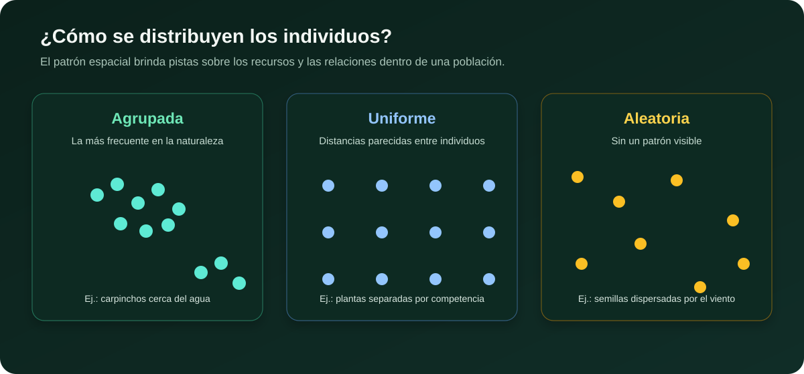
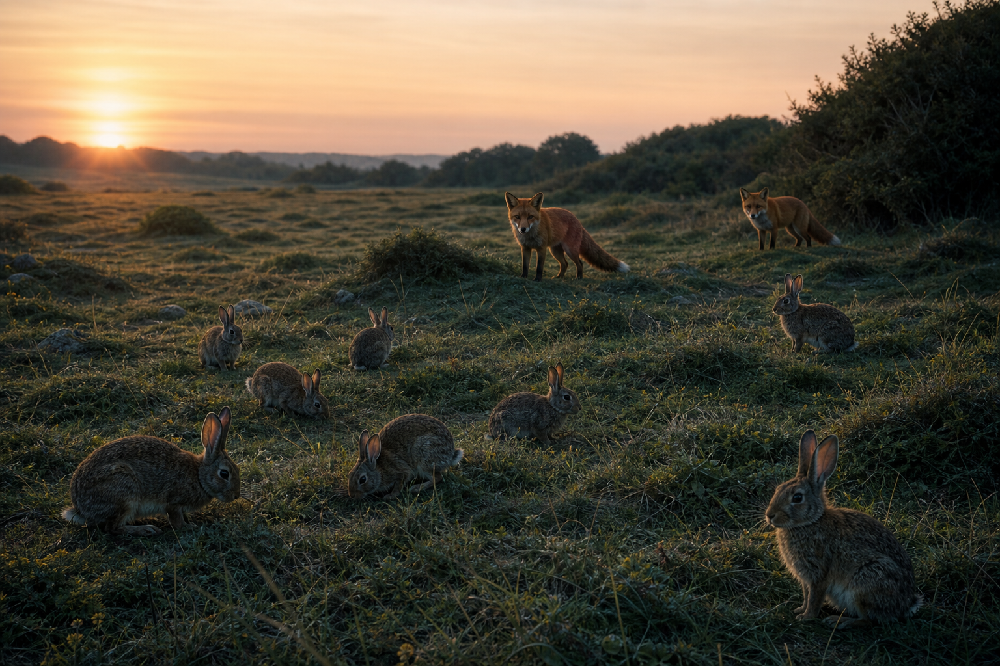
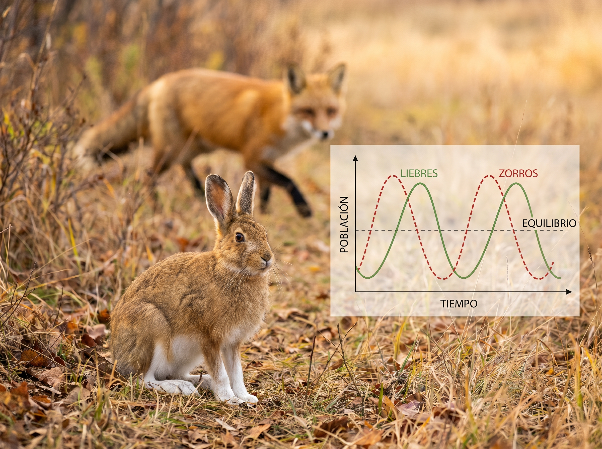

¿Qué es una población?
Una población es un conjunto de organismos de la misma especie que viven en un mismo lugar y al mismo tiempo. Todos los individuos comparten el espacio, los recursos y tienen la capacidad de reproducirse entre sí. Por ejemplo, los carpinchos que habitan los Esteros del Iberá, los pinos de un bosque patagónico, o las ballenas francas que cada año llegan a las costas de Puerto Madryn forman poblaciones.
Para estudiar una población, los ecólogos se preguntan: ¿cuántos individuos hay? ¿cómo están distribuidos? ¿está creciendo o disminuyendo? Estas preguntas nos llevan a las propiedades fundamentales de toda población.

Propiedades de las poblaciones
Toda población puede describirse mediante tres propiedades principales:
Es el número total de individuos que componen la población. Se representa con la letra N. Conocer el tamaño permite saber si una especie es abundante o escasa.
Es la cantidad de individuos por unidad de área o volumen. Se calcula como \(D = \frac{N}{S}\), donde \(N\) es el número de individuos y \(S\) la superficie. La densidad nos dice qué tan «apretada» está la población.
Es la manera en que los individuos se reparten en el espacio. Puede ser uniforme (individuos espaciados regularmente, como pingüinos anidando), aleatoria (sin patrón fijo, como plantas dispersadas por el viento) o agrupada (formando manadas, cardúmenes o colonias, que es la más común en la naturaleza).
Dinámica poblacional
Las poblaciones no son estáticas: cambian constantemente. El tamaño de una población varía según cuatro factores fundamentales que actúan como entradas y salidas de individuos:
Natalidad: cantidad de nacimientos en un período. Aumenta la población.
Mortalidad: cantidad de muertes en un período. Disminuye la población.
Inmigración: individuos que llegan desde otras poblaciones. Aumenta la población.
Emigración: individuos que se van hacia otras áreas. Disminuye la población.
Cuando la natalidad y la inmigración superan a la mortalidad y emigración, la población crece. Si ocurre lo contrario, la población decrece. Si se igualan, la población se mantiene estable.
Presa y depredador: conejos y zorros
Las poblaciones no cambian de manera aislada. Cuando aumentan los conejos, hay más alimento disponible para los zorros; un tiempo después puede crecer la población de zorros. La mayor depredación reduce los conejos y, al escasear las presas, también disminuyen los zorros. El ciclo puede volver a comenzar.


Curvas de crecimiento
¿Cómo crece una población a lo largo del tiempo? Los ecólogos usan gráficos para representarlo. Existen dos modelos principales:
Curva J — Crecimiento exponencial
Representa un crecimiento sin límites: la población aumenta cada vez más rápido, como una bola de nieve. Esto solo ocurre en condiciones ideales: recursos ilimitados, sin depredadores ni enfermedades. En la naturaleza, este tipo de crecimiento es raro y temporal. Ejemplo: bacterias en un cultivo de laboratorio recién sembrado, o una especie invasora que llega a un nuevo territorio sin competidores.
Curva S — Crecimiento logístico
Representa el crecimiento más realista. La población crece rápido al principio, luego se frena y finalmente se estabiliza. Ese valor máximo estable se llama capacidad de carga (K). La K está determinada por la cantidad de recursos disponibles: alimento, agua, espacio y refugio. Cuando la población supera la K, los recursos escasean y la mortalidad aumenta, devolviendo el equilibrio.
Preguntas para pensar
1. ¿Por qué ninguna población puede crecer de manera ilimitada en la naturaleza? ¿Qué factores ponen freno al crecimiento?
2. Pensá en una población que conozcas (palomas en la plaza, hormigas en el jardín). ¿Cómo describirías su tamaño, densidad y distribución?
3. Si en una isla llegan 50 nuevos conejos desde el continente y nacen 30, pero mueren 10 y emigran 15, ¿cuál es el cambio neto de la población?